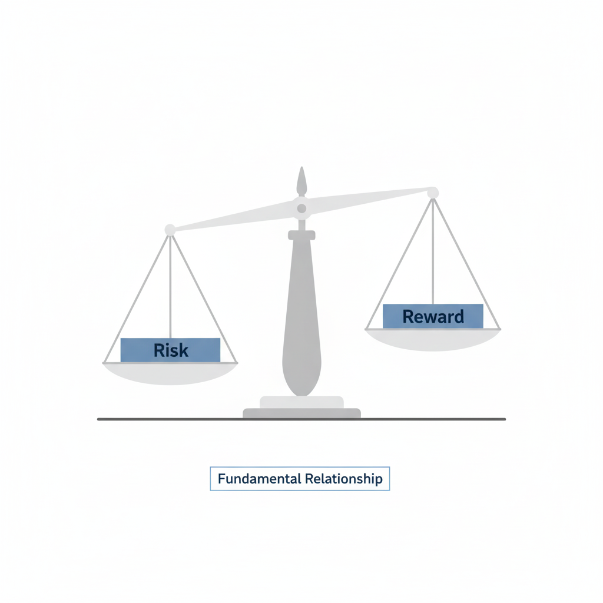
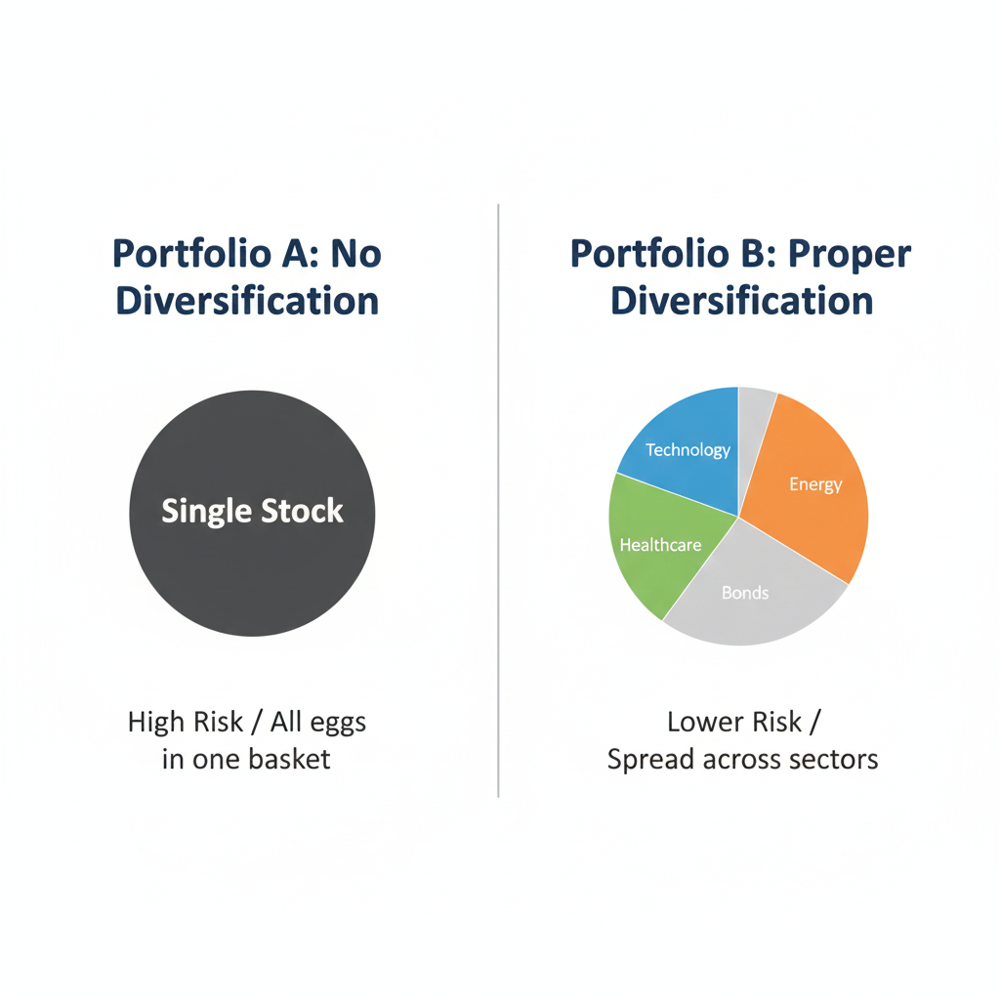
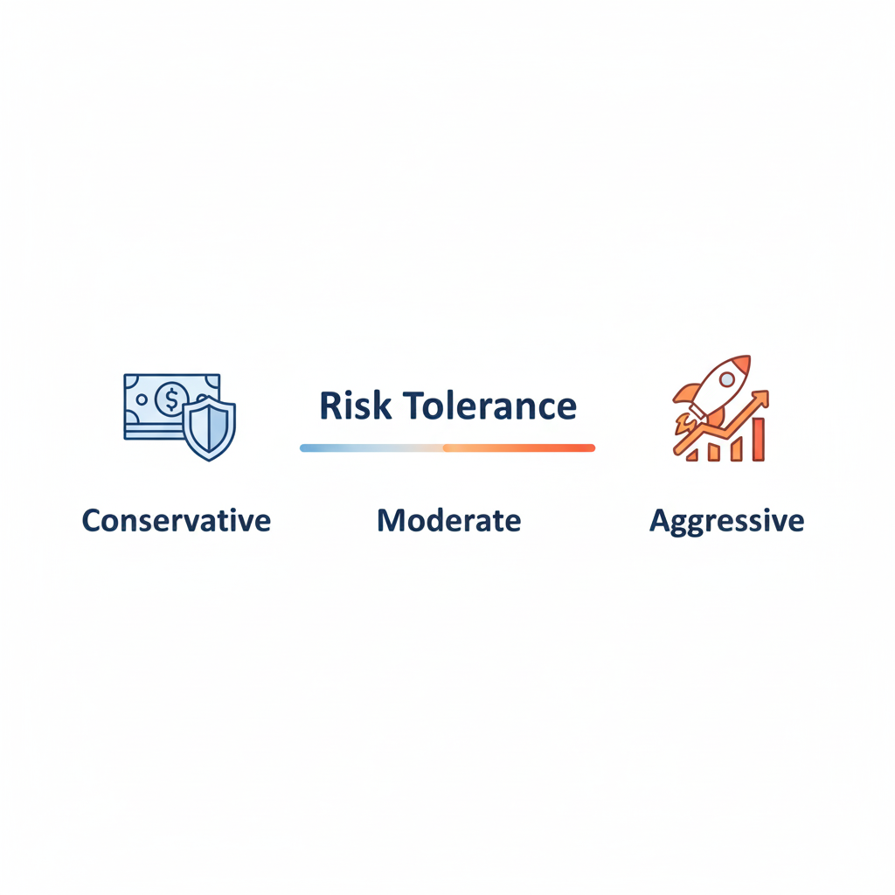

Risk management is the process of identifying, analyzing, and mitigating the uncertainty in investment decisions. It is the defensive strategy that protects your capital from catastrophic losses. Without a solid risk management plan, a single market downturn can wipe out years of disciplined saving. Think of it as the foundation of a house; while the roof and walls represent your gains, the foundation ensures the structure remains standing when a storm hits.
For beginners, risk management can often feel secondary to the excitement of the market. Yet, understanding that every investment carries some level of uncertainty is the first step toward becoming a mature and responsible learner. In this article, we will explore why managing risk is the true engine of wealth preservation and how you can implement core principles to safeguard your financial journey.
Table of Contents
Defining Risk: More Than Just Losing Money
In common conversation, risk is often equated simply with "losing money." While that is the ultimate outcome of a failed strategy, technical financial risk is more nuanced. Understanding the different layers of risk allows an investor to build a more resilient strategy.
Market Risk and Volatility
Market risk refers to the possibility that the entire market will decline due to economic changes or global events. Volatility is the frequency and intensity of price swings. A highly volatile asset is considered "riskier" because its price can fluctuate wildly in a short period, potentially forcing an investor to sell at a loss during a temporary dip.
Inflation and Liquidity Risk
If you keep all your money in a zero-interest cash account, you face inflation risk—the risk that your money buys less over time. Liquidity risk occurs when you own an asset, like real estate, that you cannot sell quickly for its fair market value. Managing these requires balancing immediate needs with long-term growth.
Understanding these nuances is essential, much like learning Stock Market Basics before making your first trade.
The Principle of Survival: Staying in the Game
The most important concept in risk management is longevity. In the world of compounding interest, the greatest gains happen at the end of a long period. If an investor takes on too much risk and is forced to exit the market because they lost 50% of their capital, they lose the ability to participate in the recovery.
Mathematically, losses are harder to recover from than gains are to achieve. If an investment drops by 50%, it requires a 100% gain just to get back to the starting point. This "asymmetry of loss" is why avoiding large drawdowns is far more important than catching every single market rally.
Diversification: The Strategy of Spreading Risk
If you invest all your money into a single company, your financial health depends entirely on that company's success. Diversification is the practice of spreading your capital across various assets to reduce the impact of any single failure.
Correlation and Offsetting Risk
True diversification involves holding assets that are "uncorrelated"—meaning they don't all move in the same direction at the same time. While tech stocks might fall, government bonds or commodities might remain stable or even rise. This prevents your entire portfolio from dropping simultaneously.
Asset Allocation and Time Horizons
Risk management depends heavily on your goals and your time horizon. Asset allocation is the process of deciding what percentage of your money goes into different categories like stocks (high risk) and bonds (low risk).
A twenty-year-old has a long time horizon and can afford market volatility, while someone near retirement cannot afford a 30% dip. Periodically "rebalancing" your portfolio—selling winners and buying underperformers to maintain your target percentages—is a disciplined way to manage this risk over time.
This approach is consistent with the principles found in Blockchain & Crypto Fundamentals, where volatility is even more extreme.
The Psychology of Risk: Fear and Greed
Human beings are biologically programmed to feel the pain of a loss much more intensely than the joy of a gain. This is known as "loss aversion." When markets fall, fear often drives investors to sell at the bottom. When markets boom, greed drives them to buy at the top.
Risk management removes this emotional bias by providing a set of pre-determined rules. Knowing your personal "risk tolerance"—your ability to sleep at night while your investments fluctuate—is essential to sticking to your long-term plan.
Practical Risk Management Tools
Position Sizing and Emergency Funds
Position sizing means never putting too much into one single investment (e.g., no more than 5% in one stock). Additionally, the ultimate risk management tool is an emergency fund. Having cash in a savings account ensures you never have to sell your long-term investments during a market crash just to pay for a car repair or medical bill.
Understanding What Moves Stock Prices can help you set more realistic expectations for these fluctuations.
Key Takeaways
- Capital Preservation: Survive the bad times so you can profit from the good times.
- Asymmetry of Loss: A 50% loss requires a 100% gain to recover; avoid deep drawdowns.
- Diversification: Spread investments across uncorrelated sectors and asset classes.
- Asset Allocation: Align your portfolio with your age and financial goals.
- Psychological Discipline: Use rules to prevent emotional selling during market fear.
Conclusion
Risk management may not be the most exciting part of investing, but it is the most important. It is the difference between a person who gambles and a person who builds a sustainable financial legacy. By acknowledging that risk exists and creating a plan to address it, you take control of your financial narrative. Stay disciplined, stay diversified, and keep your long-term goals in focus.
Educational Disclaimer:
This article is for educational and informational purposes only and should not be considered financial or investment advice. Investing involves risk.